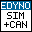
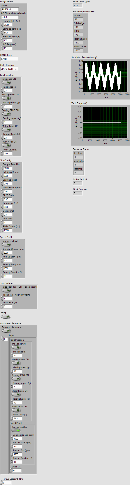
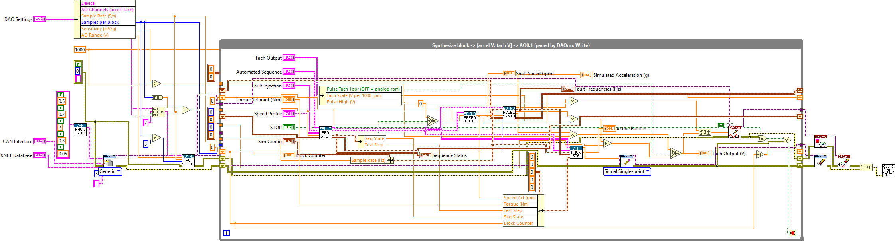

eDyno NVH simulator + CAN (eDyno_NVH_PoC.dbc, CAN FD) - copy of eDyno NVH Accel + RPM Simulator.vi with an NI-XNET Signal Output Single-point session on the PXIe-8510 Port1. Once per AO block it publishes DYNO_Cmd, DYNO_Status, SIM_FaultCmd, SIM_FaultStatus and SIM_Config; NI-XNET retransmits each frame at its DBC cycle time (10/100/1000 ms) with the latest values. FlexLogger on Port2 (loopback) logs them next to the raw accel. DynoSts_BlockCounter = AO block index.
Manual: leave Run Auto Sequence OFF and toggle Fault Injection / Speed Profile on the panel. Automated: switch Run Auto Sequence ON - each row of Steps is applied for Dwell (s), the run-up restarts at every step, Test Step increments; after the last row the panel values apply again (Seq State 3 = AutoDone).
Setup: import eDyno_NVH_PoC.dbc as XNET database alias eDyno_NVH_PoC (NI-XNET Database Editor or MAX) and confirm the cluster is CAN FD+BRS, 500 kbit/s / 2 Mbit/s. CAN Interface = the 8510 port wired to FlexLogger's port (default CAN1).


